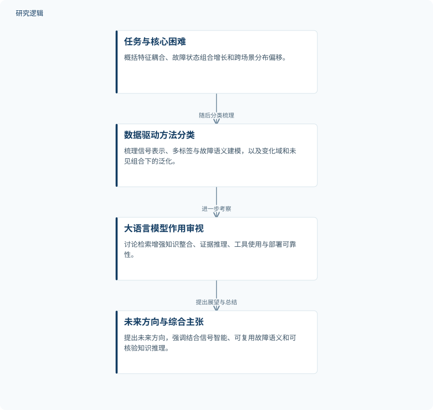

摘要解读
工业机械复合故障诊断：数据驱动方法、挑战与大语言模型增强展望
Compound Fault Diagnosis for Industrial Machinery: Data-Driven Methods, Challenges, and LLM-Enhanced Perspectives
解读更新 2026-10-26 12:43 · 依据公开摘要整理，未核验全文细节
工业机械的多个局部故障同时发生时，监测信号会相互混杂，诊断难点也随之超出单一故障识别。这篇综述从应用场景出发，梳理数据驱动方法与大语言模型的潜在作用，帮助读者理解复合故障诊断需要解决哪些不同层次的问题。
文章目录
复合故障：信号混杂之外还有状态与分布难题
复合故障指工业机械中多个局部故障同时存在，并共同影响状态监测信号。调制、结构传递、工况变化和传感器响应都会使故障特征混合，增加特征分离与状态识别的难度。
摘要将核心困难归纳为三个方面：故障特征耦合、故障状态的组合式增长，以及跨工况和跨机器的分布偏移。因此，问题不仅在于如何分开混合信号，还涉及如何表示不同故障组合，以及如何应对诊断场景的变化。
按应用场景组织方法，而非提出单一诊断模型
本文是一篇综述，摘要明确的方法是以场景为导向组织文献：先概括任务定义与主要困难，再将代表性方法分为信号表示、多标签与故障语义建模，以及面向变化域和未见故障组合的泛化三个领域。
在此基础上，文章考察大语言模型的新兴作用，关注检索增强的知识整合、基于证据的推理、使用工具的诊断智能体，以及部署可靠性。这里描述的是综述的讨论范围，不能据此认定作者已经构建或验证了相应诊断系统。
依据摘要整理的综述组织示意


概括摘要明确陈述的论述顺序，表示综述组织关系，不代表已实现的诊断流程或论文原图。
下载 SVG图示关系说明
实线表示相邻阶段的信息流，虚线表示跨阶段联系或反馈。
任务与核心困难 → 数据驱动方法分类：随后分类梳理；数据驱动方法分类 → 大语言模型作用审视：进一步考察；大语言模型作用审视 → 未来方向与综合主张：提出展望与总结
综述主张：连接信号、故障语义与可核验知识
摘要给出的核心判断是：实用的复合故障诊断需要结合信号层面的智能、可复用的故障语义，以及可核验的知识推理。这是作者对领域发展的综合主张，而非某个模型优于其他方法的定量实验结论。
文章还提出组合泛化、跨机器迁移、多模态感知、工业基础模型和自主维护等未来方向。这些内容属于研究展望，摘要并未将其表述为已经实现的能力或已经验证的维护效果。
仅凭摘要，尚不能判断证据覆盖与性能边界
摘要未报告文献检索与筛选范围，也未提供具体数据集、样本规模、比较基线、评价指标或定量结果。因此，无法据此判断各类方法的性能排序，以及跨机器、跨工况和未见故障组合的验证覆盖程度；这不意味着论文全文没有相关讨论。
阅读启发：大语言模型如何与诊断证据衔接
阅读启发：对智能运维读者，进一步阅读时可重点追问，信号表示如何与故障语义对应，大语言模型的判断如何回溯至监测证据或检索知识，以及部署可靠性如何评价。这些问题直接承接摘要的讨论重点，但当前资料不足以给出答案，也不足以认定引入大语言模型必然提高诊断效果。
以上为本站阅读启发与建议，不是论文已验证的结论。